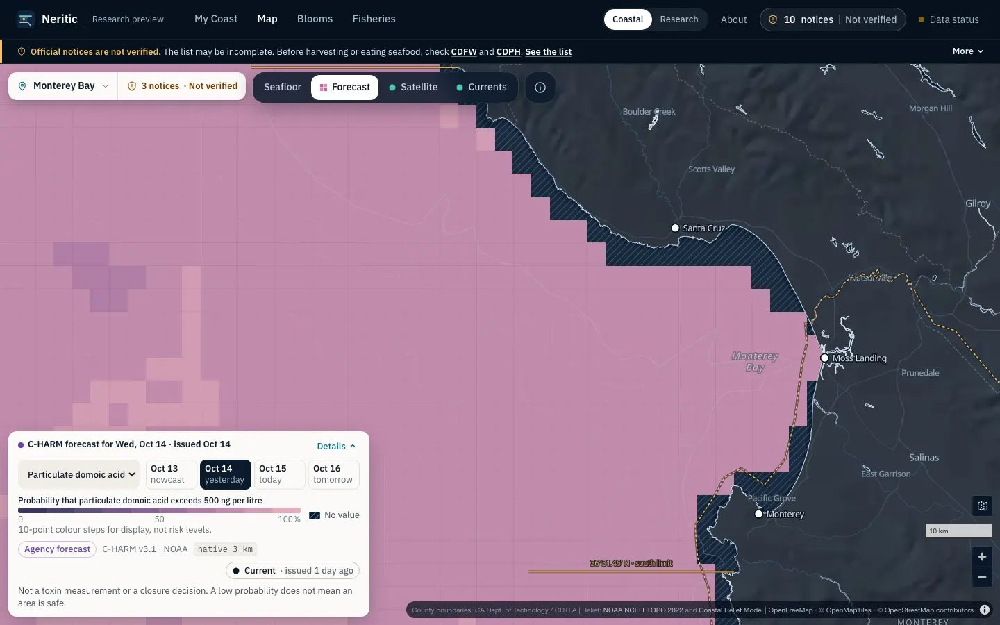
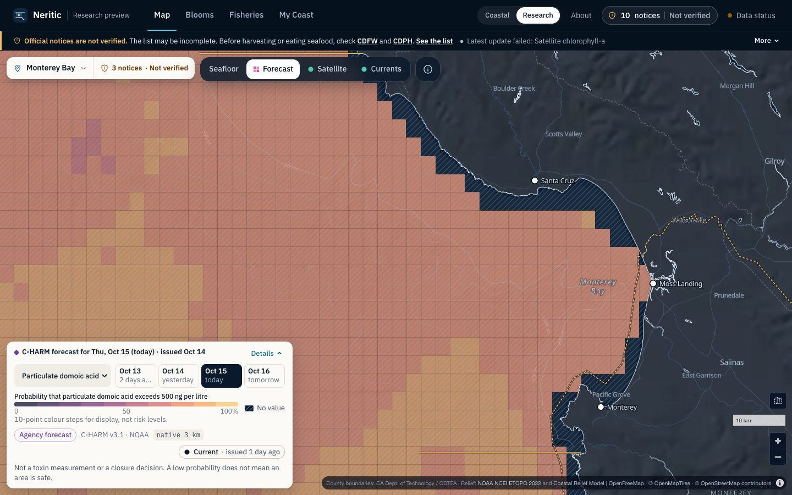
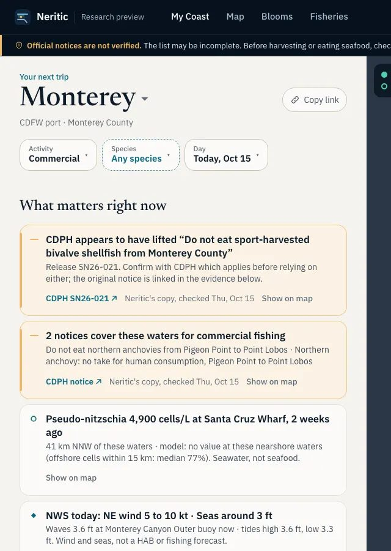
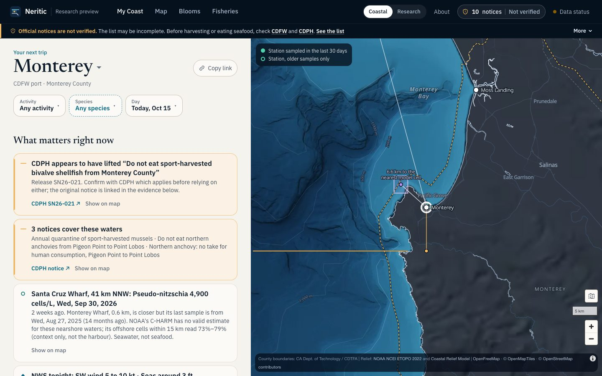
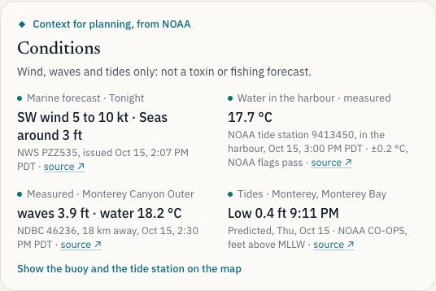
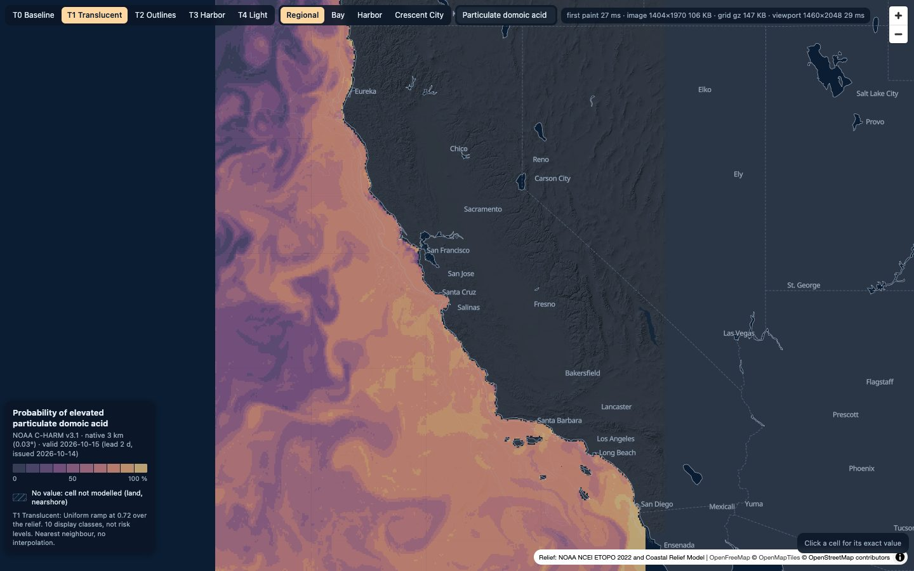
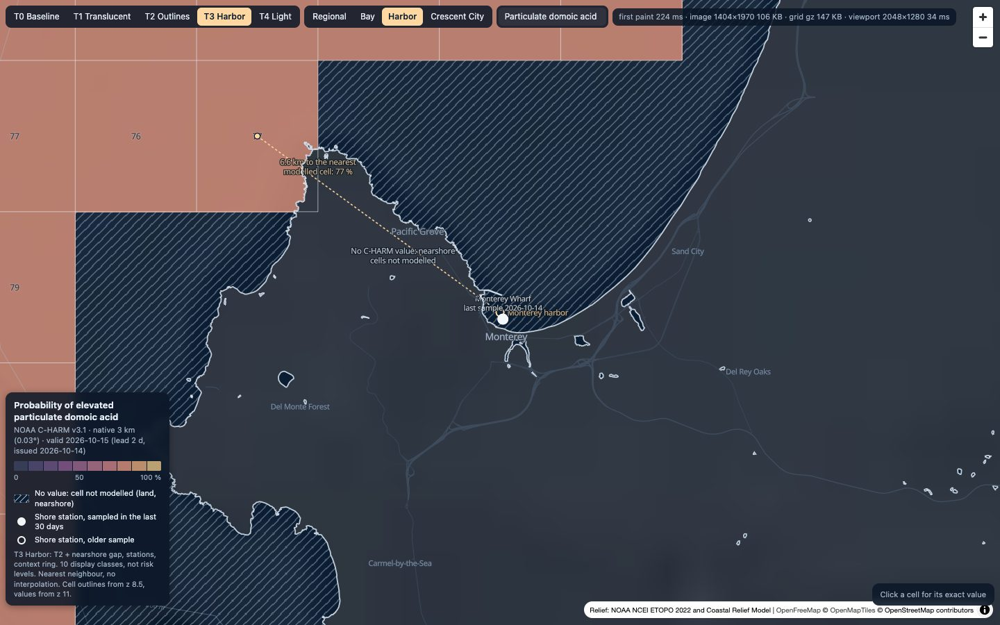
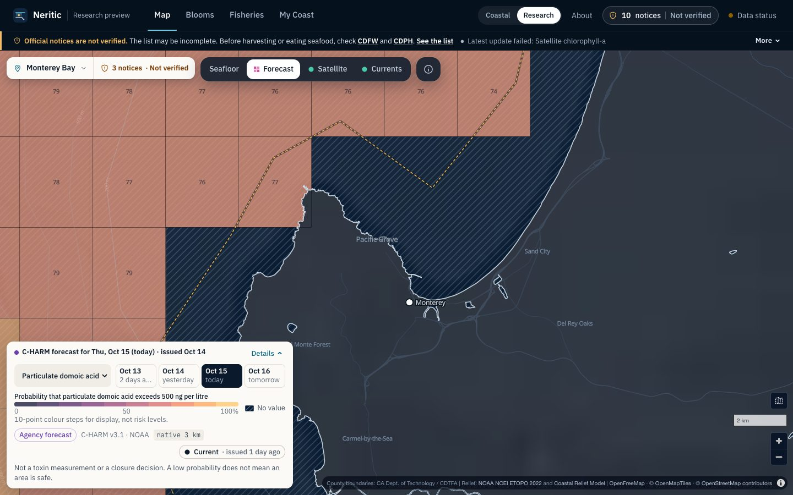
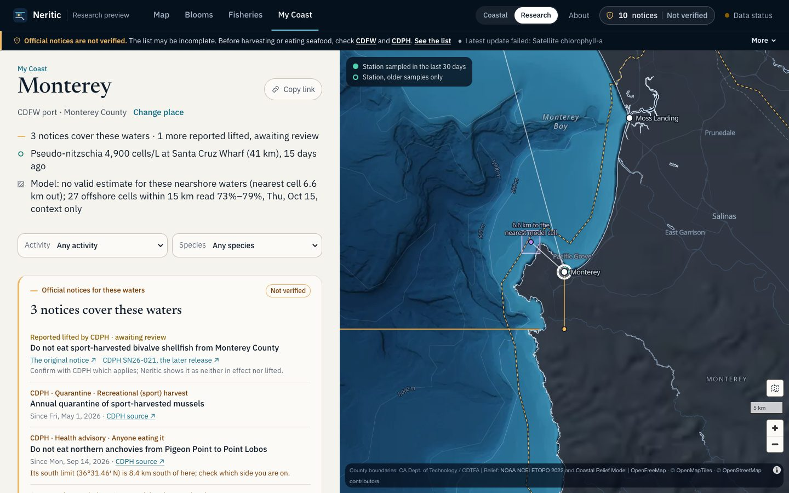
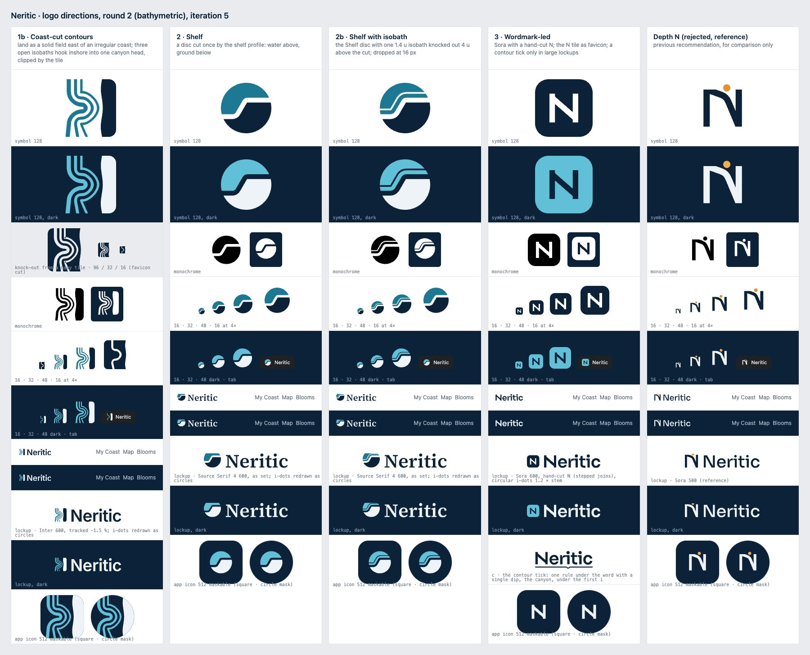

SummaryWhat concretely works now
Nothing here is merged or deployed. Everything below runs on the 15 October production data in a private build of the branch feat/coastal-intelligence-v2, stacked on the design study (#63) and the Neritic name (#62).
built · proven
Stage 1 trust fixes with regression tests; the harbour evidence service and /api/evidence; in-harbour water temperature from NOAA CO-OPS; the OLCI pipeline fix; limit lines named by their notices.
built · visual
The cartography treatment in the product map: a uniform translucent ramp, zoom-adaptive cell outlines, per-cell values at harbour zoom, the distance label on My Coast's thread. Display only; every value is the published one.
studied · not built
The source feasibility matrix; the cartography prototype's light-map variant; three logo directions; the harbour-prediction research design; the AI tool contract.
unvalidated · kept out
Any nearshore toxin estimate. The PINN/ConvLSTM chlorophyll work. IFCB class scores. Gap-filled chlorophyll shown as observation. None of these reaches a page.
Stage 1Correctness and trust
The design audit's four P0 findings, fixed in the product and covered by tests. The map now opens on today; every day chip names its date and its distance from today, and "nowcast" lives only in the run line, which explains why the nowcast's date precedes the run's.




- Latency in the right voice. A run a few days old is NOAA's ordinary latency: "No newer run since Oct 12 (3 days ago). NOAA's C-HARM runs are often missing a day or more." in a caution tone. "Out of date" and "Update failed … at 10:03 AM PDT" stay red. The briefing says "run of Oct 12, 3 days old", never "stale run".
- Offshore cells never drawn as the harbour's own. Outlook bars and the evidence timeline draw an offshore median outlined and hatched, labelled "offshore"; only the waters' own cell is a solid bar.
- Duplicates. Research-mode My Coast says the run's note once; the agency check date is said once under "What matters", not under every item.
- Map boundaries. Latitude limit lines are named by the notices they bound: "Northern anchovy notices · south limit 36°31.46′ N". (They still cross a little land at Point Lobos; clipping to water is Stage 3 work.)
Stage 2The harbour evidence service
One typed graph per place, built from the same readings My Coast makes, so a sentence on the page, an API answer and a future assistant rest on the same evidence. Every node carries how it is known (measurement · satellite retrieval · published forecast · reconstruction · experimental), its source, time, native support, distance and bearing, a per-variable representativeness class, the station's setting, freshness, flags, lineage and caveats. Gaps are said as gaps. Claims cite the node ids they rest on.
The acceptance statement, produced from the live data by GET /api/evidence?place=port-550:
Santa Cruz Wharf reported 4,900 cells/L Pseudo-nitzschia on September 30, 41 km NNW of Monterey. Monterey Wharf is closer (0.6 km) but has no comparable sample since August 27, 2025.claim "measured", supports pn_cells:HABs-SantaCruzWharf
NOAA's C-HARM model has no valid estimate in these nearshore waters. Its nearest cell is 6.6 km out; the 27 offshore cells within 15 km read 73%–79% for October 15, context for the open water, not the harbor.claim "model", kind gap, supports charm:offshore:2026-10-15
| Harbour | Measured (nearest usable) | C-HARM at the harbour | Satellite chlorophyll | In-harbour water |
|---|---|---|---|---|
| Monterey | Santa Cruz Wharf, 41 km, 30 Sep · Monterey Wharf closer but silent since Aug 2025 | no value · nearest cell 6.6 km · 27 cells 73–79 % | 2.9 mg/m³ at the pixel, 12 Oct (VIIRS 750 m) | 17.6 °C, tide station 9413450, 1.0 km |
| Santa Cruz | Santa Cruz Wharf, 2.2 km, 30 Sep | no value · nearest 7.2 km · 24 cells 75–81 % | 1.5 mg/m³ median of 116 pixels within 5 km, 10 Oct (OLCI 300 m) | none within 20 km (said so) |
| Crescent City | none within 60 km (Trinidad Pier 77 km, Bodega 394 km) | no value · nearest 2.4 km · 40 cells 50–96 % | 6.9 mg/m³ at the pixel, 12 Oct | 11.7 °C, tide station 9419750, 1.7 km |
| San Diego | Scripps Pier 20 km, cells 4 weeks old, toxin 2 months old | no value · nearest 8.4 km · 13 cells 88–93 % | 4.5 mg/m³ median of 20 pixels, 12 Oct | 23.9 °C, tide station 9410170, 4.0 km |
| Shelter Cove | none within 60 km (Humboldt South Bay 79 km) | no value · nearest 4.7 km · 31 cells 65–74 % | 1.2 mg/m³ median of 757 pixels, 12 Oct (OLCI) | none within 20 km |
Representativeness is per variable, with the reasons in code: piers 2 / 15 / 60 km (bloom-patch scale and the C-HARM pier validation), satellite pixels 0.5 / 5 / 15 km, C-HARM own cell vs 15 km context, synoptic wind 30 km, harbour water temperature 2 km. A station's setting (exposed pier, sheltered harbour, offshore) is a named heuristic that never changes a value.
Stage 2In-harbour water temperature, measured
The one verified, low-risk source from the matrix that adds knowledge at the harbour: NOAA CO-OPS tide stations with a thermistor inside the harbour, 6-minute averages, ±0.2 °C, NOAA-flagged, public domain. Read live by /api/conditions as a new part, within 20 km only, named "in the harbour" within 2 km and by its distance otherwise. A station whose sensor is down (Santa Barbara, Los Angeles and San Francisco on 15 Oct) is said as such, not as an outage.

Why it matters: the OLCI 300 m product had usable pixels within 1.5 km of a harbour on only 1–3 of the last 8 days (fog and cloud). In-situ measurements are what make a harbour panel reliable. The next two sources in line are the CeNCOOS shore stations with QARTOD flags (Morro Bay T-pier, the harbour CO-OPS misses) and the CDIP wave buoys.
Stage 0Which new sources are genuinely useful
Every row of 01-sources.md was probed live on 15 October. The short version:
| Source | Harbour value | Verdict |
|---|---|---|
| NOAA CO-OPS 6-min water temperature | measured in the harbour at 3 of 6 test harbours, ±0.2 °C, flagged | built |
| CeNCOOS shore stations (ERDDAP, QARTOD) | in-harbour T, salinity, chlorophyll fluorescence at Morro Bay; Trinidad, Humboldt, Bodega; Santa Cruz Wharf offline since 19 Aug | next |
| CDIP wave buoys (THREDDS) | harbour-approach Hs/Tp/Dp and SST at 18–34 km, unrestricted | next |
| WCOFS station file (87 nodes, 6-min, 72 h) | the only forecast of harbour-approach water temperature; RMSE ≈ 1.15 °C; 1.7–5.3 km out | later, as guidance |
| Sentinel-3 OLCI (NOAA) | already integrated; the "404" was a front-end HTML page while S3B's feed stalled, fixed in the pipeline | fixed |
| SCCOOS/UCLA ROMS · UCSC 150 m Monterey nest | dead since Dec 2022 · stale since Feb 2026, "not for operational use" | no |
| Copernicus Marine, EUMETSAT | account, attribution and record-keeping obligations | not without the owner's decision |
| Gap-filled chlorophyll (NOAA DINEOF 2/9 km, GlobColour 4 km) | reconstructions: visual smoothness only | never as observation |
| IFCB class scores (ifcb.caloos.org) | provisional CNN output, no licence statement | research only |
| CDFW fishery status | no structured feed; boundaries only | a person reviews |
Stage 3The map: beautiful without inventing precision
The renderer is unchanged: every pixel is the 3 km cell that contains it, clipped to the basemap's water, nothing interpolated. What changed is what the reader sees. The classes are built in OKLCH with lightness rising in near-equal steps and chroma held low through the reds, drawn at 0.72 opacity so the seafloor stays legible; cell edges appear from z 8.5 and each cell says its value from z 11; at harbour zoom the no-value water stays a hatch and the thread to the nearest cell carries its distance.




Measured in the prototype (Chrome, local): grid 147 KB gzipped, decode 3–11 ms, whole-field image 105 KB, first paint of the field 22–42 ms for the raster alone and 170–233 ms with the derived outlines and labels. The light-map variant (T4) works only with a lighter ramp and the outlines on; its top class has 1.2:1 luminance contrast against the light sea and separates by hue, which is the inherent limit of a light-rising ramp on a light map. Recommendation: keep the dark relief as the default, offer the light map as a reading mode later.
Stage 5Bathymetric identity: three directions, none installed

- Strongest candidate: 2b, the shelf with one isobath. A disc cut once by the shelf profile, with a single isobath on the water side; the line moves it out of the split-disc genre and makes it bathymetry. Single-path mono; at 16 px it falls back to the plain shelf (2), which is the cleanest small mark on the board.
- 3, wordmark-led, has the best typography and the most pragmatic system, but its N tile is a generic app-letter tile.
- 1b, coast-cut contours, is the most literal chart and the strongest full-bleed app icon, but its three hooks read as a ribbon on a transparent ground and it needs 32 px for the full figure; another round would try two isobaths cut by a straight coast.
Nothing resembles Neritic Diving's mark (brush-stroke waves over hand-lettered caps). Vectors, generator, favicon renders and five rounds of critique: logo/.
Stage 6What remains scientifically unvalidated
- Any nearshore toxin estimate. C-HARM has toxin values in 12.6 % of water within 1 km of shore; no public validated product fills that gap, and interpolating C-HARM to the shore is unsupported (three sources against it). The product says "no valid estimate" at the harbour and shows the offshore cells as context.
- The PINN/ConvLSTM chlorophyll work (PR #49 audit): a climatology plus AR(1) baseline matches both networks and the physics term is inert. It is a chlorophyll model, not a toxin model, and will not be advertised as one.
- A pier-point domoic acid outlook is the only defensible target: 4,267 CalHABMAP toxin samples at 10 piers since 2014, 155 at or above 0.5 ng/mL. The study design in 02-plan.md holds out whole years and whole piers, compares to climatology, persistence, AR(1) and C-HARM's own cell, scores calibration, and promotes nothing until it beats every baseline on held-out piers across two seasons. If the labels cannot support it, the study says so and stops.
- IFCB class scores are provisional classifier output with no licence statement; not counts.
Stage 7Exact tests and benchmarks
| Suite | Before | After | Where |
|---|---|---|---|
| Web unit (Vitest) | 310 | 333 | new: charmDays, harborEvidence, officialGeometry; additions to trip, conditions, grid, design |
| Web Playwright (4 servers, axe in 13 specs) | 249 | 249 | map.spec (chips, opening day, note tones), coastal.spec (harbour water tile) |
| Pipeline pytest | 245 | 246 | test_satellite: the masked 404 |
| CI (Linux, bundled Chromium) | — | green | web-static, web-e2e ×2, pipeline, on PR #65 |
Scientific-communication regressions now asserted: every day chip's relative word equals the calendar's for any clock; the default day is today when the run reaches it; a run ≤ 7 days old is a caution, never a failure; the HAB headline carries the station and distance before the value; the offshore range is marked context and no claim contains "median" for waters without a cell; no claim contains "safe", "catch" or a risk score; every claim's supporting ids exist in the graph; the water-temperature parser rejects flagged, old and future readings and treats "No data" as a sensor down.
Not measured in this pass: Lighthouse and frame-rate profiling of the product map (the prototype's first-paint numbers are above); tap-target compliance on the phone (the design audit's counts stand until Stage 4).
Decisions and nextWhat the owner decides, and the next milestone
- Logo: 2b, 2, 3, or another round on 1b.
- Stage 1 on main now? The trust-fix commits are independent of the brand and can be cherry-picked to
mainahead of #62. - Light map: keep as a later reading mode, or drop.
Next highest-leverage milestone: Stage 4, My Coast on the phone. The briefing's answer lines should come from the evidence graph's claims in order (official → measured → model → satellite → conditions), followed by one compact evidence section and the checklist, with the detailed science behind one disclosure. Today the phone page is about seven screens; the target is the first useful answer within one. Then CeNCOOS shore stations and CDIP waves through the same conditions route.
No public release, merge, deploy, domain change or purchase happens without the owner's explicit approval.